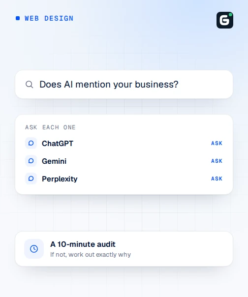
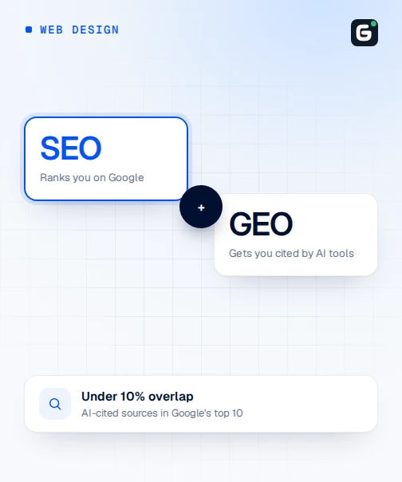
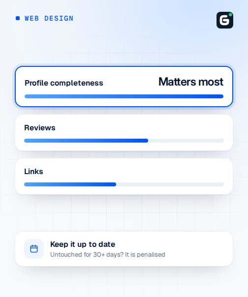

16 September 2026

Blog · Web Design

Quick answer
Ask ChatGPT, Gemini and Perplexity “Who is a good [your business type] in [your city]?” and “Recommend a [your service] in [your area]”, and note honestly whether your business is named unprompted. If it isn't, the usual causes are thin website content with no clear facts, no schema markup, inconsistent name/address/phone details across listings, no FAQ section, or generic reviews with little detail. Fixing those is what Gotka's Generative Engine Optimisation add-on covers, and repeating this same audit every few months shows whether it's working.
This is a checklist you can genuinely run in the next ten minutes, using nothing but a phone and the free tier of a few AI assistants. It won’t fix anything by itself, but it will tell you, honestly, whether a customer typing a natural question into ChatGPT, Gemini or Perplexity would ever hear about your business — which is worth knowing before spending money on anything to improve it. Share the result with a colleague or business partner once you’ve run it; a second person testing the same questions independently often catches a mention or a gap the first pass missed, since AI assistants don’t always give the exact same answer twice.
Open ChatGPT, Gemini and Perplexity, one at a time, and ask two things in each:
Use plain, natural phrasing rather than your exact business name — the point is to see what comes up for someone who doesn’t already know you exist. Try a second, more specific version too, using whatever product or service the business is actually known for, since a broad question and a specific one can surface different results.
Keep the record simple — a business type, an assistant, and one of three outcomes is all that’s needed, and it takes seconds per attempt once the pattern is set.
For each assistant and each question, note one of three outcomes: mentioned by name, mentioned only if you ask a follow-up naming your business directly, or not mentioned at all even after a follow-up. This is the part worth being honest about — it’s tempting to count a mention that only appears after leading the AI straight to your name, but that isn’t the same as a customer discovering you unprompted.
A handful of causes account for most cases of a real, established business simply not coming up:
It’s worth running the audit across all three rather than just one, because ChatGPT, Gemini and Perplexity don’t all find businesses the same way — some lean more on live web search, others draw more on a fixed body of training data or a specific data source like Google or Bing. A business missing from one assistant’s answer but present in another isn’t a contradiction; it’s a sign of which underlying sources each tool is actually pulling from, and it means a single “we’re not on AI” conclusion from testing only one assistant can be misleading in either direction.
Say a bakery in Ipoh asks Perplexity “Recommend a cake shop in Ipoh” and gets three named competitors back, none of them the bakery itself, each with a short reason attached — a specialty, a location, a standout product. That specificity is the tell: those three businesses likely have clear, structured facts an AI could confidently extract, while the missing bakery either doesn’t, or has facts that are too vague or inconsistent to state with confidence. Running the same question in ChatGPT and Gemini and seeing whether the pattern repeats is what turns one data point into an actual diagnosis rather than a fluke.
Being named in every single answer to every phrasing isn’t a realistic bar, even for an established business — these tools vary their answers, and there’s rarely only one correct recommendation for a search like this. A genuinely good result is being mentioned unprompted in most attempts across at least two of the three assistants, with the facts stated about the business being accurate. Being mentioned in one out of six attempts, or only after directly naming the business, points to a real visibility gap worth addressing rather than a fluke of how the question was worded.
Once a gap shows up, it’s tempting to chase quick wins that look like they’d help — stuffing a homepage with every possible keyword variation, or buying a batch of generic five-star reviews. Both tend to backfire. Keyword-stuffed copy reads as less clear and specific to an AI tool trying to extract a genuine fact, not more; and reviews that are vague or clearly bulk-purchased carry little of the specific detail that actually functions as a signal, sometimes flagged outright by the platforms hosting them. The fixes that actually work are the boring, structural ones — clear facts, consistent details, real detailed reviews — not a shortcut around them.
If the audit turns up a gap, the fixes map fairly directly to the causes above: tighten the website’s copy so it plainly states what the business does and for whom, add schema markup and structured content an AI tool can extract with confidence, check that the business’s name, address and phone number match exactly everywhere they’re listed, add a proper FAQ section, and encourage specific, detailed reviews rather than just a star rating. None of these are one-off fixes — re-running this same ten-minute audit every few months is the honest way to see whether they’re actually working.
For more detail on how these tools decide what to surface in the first place, see our guide on how AI search engines pick which businesses to recommend, which goes deeper into each of the causes above, including how ChatGPT, Perplexity, Gemini and Copilot each source information.
Gotka’s web design packages include Generative Engine Optimisation as an add-on — structured content and schema markup built specifically to help AI search tools extract and state a business’s facts with confidence, which is exactly the gap this audit is designed to surface. It sits alongside the same basic SEO every Gotka website already includes, rather than replacing it.
Ask something close to how a real customer would search: “Who is a good [your business type] in [your city]?” and “Recommend a [your service] in [your area].” Try both a generic phrasing and one using the specific service or product the business is known for, since the two can produce different answers.
Not necessarily broken, but it usually means an AI assistant found nothing confident enough to state as fact. These tools favour businesses with clear, consistent, structured information about what they do, where, and for whom — a business with a thin or inconsistent web presence is simply less likely to be extracted and mentioned, not penalised for any specific fault.
NAP stands for Name, Address and Phone number — the basic facts about a business. When these details differ even slightly across a website, Google Business Profile and directory listings, AI assistants have a harder time confirming which version is correct, and are less likely to state any of them confidently in an answer.
Yes — a clearly written FAQ section gives an AI assistant pre-packaged question-and-answer pairs it can lift almost directly into a response, which is easier for it to use confidently than extracting the same fact from a paragraph of marketing copy.
It can, particularly for tools that draw on Google's own data. Specific, detailed reviews that describe what a business actually does tend to carry more weight as a signal than a high star rating alone, since they give an AI assistant concrete facts to reference rather than just a number.
Every few months is reasonable for most businesses, since AI assistants update what they know over time and a business's own content, reviews and listings change too. It's also worth repeating after any major website update, to confirm the change actually improved how the business gets described.
Yes — Generative Engine Optimisation is available as an add-on on Gotka's web design packages, covering structured content and schema markup built specifically to help AI search tools extract and state a business's facts with confidence.
Related guides
16 September 2026

16 September 2026

13 September 2026

9 September 2026